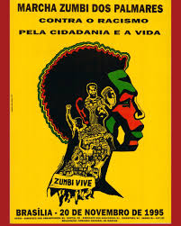

A Marcha do Zumbi dos Palmares
A Marcha do Zumbi dos Palmares é um importante movimento de valorização da consciência negra no Brasil, realizada em homenagem ao líder quilombola Zumbi e a todos que lutaram contra a escravidão e o racismo estrutural.
Ela simboliza resistência, orgulho e união, reforçando a importância da luta por igualdade racial, justiça social e reconhecimento das contribuições do povo negro na formação da sociedade brasileira.
